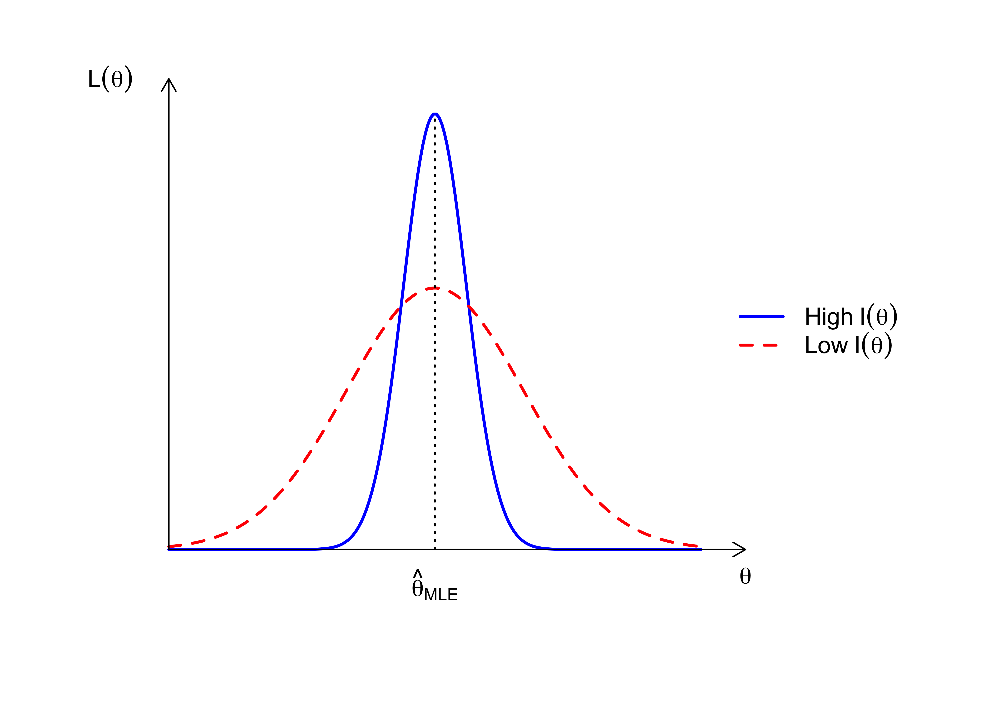

5 Theory of Log-Likelihood
5.1 Definitions and Notations
5.1.1 Regular Family
Definition 5.1 (Regular Families) A family of probability density functions is said to be a Regular Family if the support \(\{\mathbf{x} : f(\mathbf{x}|\boldsymbol{\theta}) > 0\}\) does not depend on the parameter vector \(\boldsymbol{\theta}\).
This condition allows for the interchange of differentiation and integration: \[ \nabla_{\boldsymbol{\theta}} \int \exp\{\ell(\boldsymbol{\theta}; \mathbf{x})\} d\mathbf{x} = \int \nabla_{\boldsymbol{\theta}} \exp\{\ell(\boldsymbol{\theta}; \mathbf{x})\} d\mathbf{x} \]
5.1.2 Score Vector and Fisher Information
Before stating the theorem, we define the following notations for the score and information in the context of a parameter vector \(\boldsymbol{\theta} = (\theta_1, \dots, \theta_p)^T \in \mathbb{R}^p\):
Definition 5.2
Score Vector (\(\mathbf{U}\)): The gradient of the log-likelihood.
It is a random column vector of dimension \(p \times 1\). \[ \mathbf{U}(\boldsymbol{\theta}; \mathbf{X}) = \nabla \ell(\boldsymbol{\theta}; \mathbf{X}) = \frac{\partial \ell(\boldsymbol{\theta}; \mathbf{X})}{\partial \boldsymbol{\theta}} = \begin{bmatrix} \frac{\partial \ell(\boldsymbol{\theta}; \mathbf{X})}{\partial \theta_1} \\[6pt] \frac{\partial \ell(\boldsymbol{\theta}; \mathbf{X})}{\partial \theta_2} \\[6pt] \vdots \\[6pt] \frac{\partial \ell(\boldsymbol{\theta}; \mathbf{X})}{\partial \theta_p} \end{bmatrix} \]
Observed Information Matrix (\(\mathbf{J}\)): The negative Hessian
of the log-likelihood. It is a symmetric random matrix of dimension \(p \times p\), measuring the curvature of the log-likelihood surface. \[ \mathbf{J}(\boldsymbol{\theta}; \mathbf{X}) = - \nabla^2 \ell(\boldsymbol{\theta}; \mathbf{X}) = - \frac{\partial^2 \ell(\boldsymbol{\theta}; \mathbf{X})}{\partial \boldsymbol{\theta} \partial \boldsymbol{\theta}^T} = - \begin{bmatrix} \frac{\partial^2 \ell}{\partial \theta_1^2} & \frac{\partial^2 \ell}{\partial \theta_1 \partial \theta_2} & \cdots & \frac{\partial^2 \ell}{\partial \theta_1 \partial \theta_p} \\[8pt] \frac{\partial^2 \ell}{\partial \theta_2 \partial \theta_1} & \frac{\partial^2 \ell}{\partial \theta_2^2} & \cdots & \frac{\partial^2 \ell}{\partial \theta_2 \partial \theta_p} \\[8pt] \vdots & \vdots & \ddots & \vdots \\[8pt] \frac{\partial^2 \ell}{\partial \theta_p \partial \theta_1} & \frac{\partial^2 \ell}{\partial \theta_p \partial \theta_2} & \cdots & \frac{\partial^2 \ell}{\partial \theta_p^2} \end{bmatrix} \]
(Expected) Fisher Information Matrix (\(\mathbf{I}\)): The
covariance matrix of the score vector. It is a deterministic \(p \times p\) matrix (for a fixed \(\boldsymbol{\theta}\)). \[ \mathbf{I}(\boldsymbol{\theta}) = E_{\boldsymbol{\theta}} \left[ \mathbf{J}(\boldsymbol{\theta}; \mathbf{X}) \right] \]
5.2 Bartlett’s Identities: Mean and Covariance of Score Vector
Theorem 5.1 (Bartlett’s Identities: Mean and Covariance of Score Vector) Let \(\{f(\mathbf{x}|\boldsymbol{\theta}) : \boldsymbol{\theta} \in \Theta\}\) be a regular family of probability density functions. The following identities hold relating the moments of the score vector \(\mathbf{U}(\boldsymbol{\theta}; \mathbf{X})\) and the observed information matrix \(\mathbf{J}(\boldsymbol{\theta}; \mathbf{X})\):
First Moment Identity: The expected score is zero vector. \[ E_{\boldsymbol{\theta}} [ \mathbf{U}(\boldsymbol{\theta}; \mathbf{X}) ] = \mathbf{0} \]
Second Moment Identity: The expected observed information equals to the covariance of the score vector (Fisher Information). \[ \text{Cov}_{\boldsymbol{\theta}} \left( \mathbf{U}(\boldsymbol{\theta}; \mathbf{X}) \right) = E_{\boldsymbol{\theta}} [ \mathbf{J}(\boldsymbol{\theta}; \mathbf{X}) ] = \mathbf{I}(\boldsymbol{\theta}) \]
Remark 5.1. The only assumption in the theorem above is that the families are regular. Therefore, we do not need to assume the log-likelihood \(\ell(\boldsymbol{\theta})\) is “well-behaved” (e.g., approximately quadratic or independence within \(\mathbf{X}\)) for these two identities to hold.
Proof.
Proof of the First Moment Identity
We start with the fundamental property that a density function integrates to 1 over the sample space of \(\mathbf{X}\): \[ \int f(\mathbf{x}|\boldsymbol{\theta}) \, d\mathbf{x} = 1 \] Differentiating both sides with respect to the parameter vector \(\boldsymbol{\theta}\): \[ \nabla_{\boldsymbol{\theta}} \int f(\mathbf{x}|\boldsymbol{\theta}) \, d\mathbf{x} = \mathbf{0} \] Assuming regularity allows us to interchange differentiation and integration: \[ \int \nabla_{\boldsymbol{\theta}} f(\mathbf{x}|\boldsymbol{\theta}) \, d\mathbf{x} = \mathbf{0} \] Using the identity \(\nabla_{\boldsymbol{\theta}} f(\mathbf{x}|\boldsymbol{\theta}) = f(\mathbf{x}|\boldsymbol{\theta}) \nabla_{\boldsymbol{\theta}} \log f(\mathbf{x}|\boldsymbol{\theta}) = f(\mathbf{x}|\boldsymbol{\theta}) \mathbf{U}(\boldsymbol{\theta}; \mathbf{x})\): \[ \int \mathbf{U}(\boldsymbol{\theta}; \mathbf{x}) f(\mathbf{x}|\boldsymbol{\theta}) \, d\mathbf{x} = \mathbf{0} \] This is precisely the definition of the expectation: \[ E_{\boldsymbol{\theta}} [ \mathbf{U}(\boldsymbol{\theta}; \mathbf{X}) ] = \mathbf{0} \]
Proof of the Second Moment Identity
We differentiate the result of the First Moment Identity \((E[\mathbf{U}(\boldsymbol{\theta}; \mathbf{X})]=\mathbf{0})\) with respect to \(\boldsymbol{\theta}^T\). \[ \nabla_{\boldsymbol{\theta}^T} \int \mathbf{U}(\boldsymbol{\theta}; \mathbf{x}) f(\mathbf{x}|\boldsymbol{\theta}) \, d\mathbf{x} = \mathbf{0} \] Applying the product rule inside the integral (remembering \(\mathbf{U}\) is a vector): \[ \int \left[ \left( \nabla_{\boldsymbol{\theta}^T} \mathbf{U}(\boldsymbol{\theta}; \mathbf{x}) \right) f(\mathbf{x}|\boldsymbol{\theta}) + \mathbf{U}(\boldsymbol{\theta}; \mathbf{x}) \left( \nabla_{\boldsymbol{\theta}^T} f(\mathbf{x}|\boldsymbol{\theta}) \right) \right] d\mathbf{x} = \mathbf{0} \]
We analyze the two terms in the bracket:
Term 1: \(\nabla_{\boldsymbol{\theta}^T} \mathbf{U}(\boldsymbol{\theta}; \mathbf{x})\) is the Jacobian of the score, which is the Hessian of the log-likelihood, \(\nabla^2 \ell(\boldsymbol{\theta}; \mathbf{x})\). By definition, this is \(-\mathbf{J}(\boldsymbol{\theta}; \mathbf{x})\).
Term 2: We use the identity \(\nabla_{\boldsymbol{\theta}^T} f(\mathbf{x}|\boldsymbol{\theta}) = f(\mathbf{x}|\boldsymbol{\theta}) (\nabla_{\boldsymbol{\theta}} \log f(\mathbf{x}|\boldsymbol{\theta}))^T = f(\mathbf{x}|\boldsymbol{\theta}) \mathbf{U}(\boldsymbol{\theta}; \mathbf{x})^T\).
Substituting these back into the integral: \[ \int \left[ -\mathbf{J}(\boldsymbol{\theta}; \mathbf{x}) f(\mathbf{x}|\boldsymbol{\theta}) + \mathbf{U}(\boldsymbol{\theta}; \mathbf{x}) \mathbf{U}(\boldsymbol{\theta}; \mathbf{x})^T f(\mathbf{x}|\boldsymbol{\theta}) \right] d\mathbf{x} = \mathbf{0} \] This simplifies to expectations: \[ -E_{\boldsymbol{\theta}} [ \mathbf{J}(\boldsymbol{\theta}; \mathbf{X}) ] + E_{\boldsymbol{\theta}} [ \mathbf{U}(\boldsymbol{\theta}; \mathbf{X}) \mathbf{U}(\boldsymbol{\theta}; \mathbf{X})^T ] = \mathbf{0} \] Rearranging gives: \[ E_{\boldsymbol{\theta}} [ \mathbf{J}(\boldsymbol{\theta}; \mathbf{X}) ] = E_{\boldsymbol{\theta}} [ \mathbf{U}(\boldsymbol{\theta}; \mathbf{X}) \mathbf{U}(\boldsymbol{\theta}; \mathbf{X})^T ] \] Finally, recall the definition of the covariance matrix for a random vector with zero mean. Since \(E_{\boldsymbol{\theta}}[\mathbf{U}(\boldsymbol{\theta}; \mathbf{X})] = \mathbf{0}\), we have: \[ \text{Cov}_{\boldsymbol{\theta}}(\mathbf{U}(\boldsymbol{\theta}; \mathbf{X})) = E_{\boldsymbol{\theta}}[\mathbf{U}(\boldsymbol{\theta}; \mathbf{X})\mathbf{U}(\boldsymbol{\theta}; \mathbf{X})^T] - E_{\boldsymbol{\theta}}[\mathbf{U}(\boldsymbol{\theta}; \mathbf{X})]E_{\boldsymbol{\theta}}[\mathbf{U}(\boldsymbol{\theta}; \mathbf{X})]^T = E_{\boldsymbol{\theta}}[\mathbf{U}(\boldsymbol{\theta}; \mathbf{X})\mathbf{U}(\boldsymbol{\theta}; \mathbf{X})^T] \] Therefore, we conclude: \[ \text{Cov}_{\boldsymbol{\theta}}(\mathbf{U}(\boldsymbol{\theta}; \mathbf{X}))=E_{\boldsymbol{\theta}} [ \mathbf{J}(\boldsymbol{\theta}; \mathbf{X}) ] = \mathbf{I}(\boldsymbol{\theta}) \]
5.3 Cramer-Rao Lower Bound
In estimation theory, we often wish to know the limit of how well a parameter can be estimated. The following theorem provides a lower bound on the variance of any estimator.
5.3.1 The Score Covariance Identity
The following theorem establishes a fundamental relationship between the sensitivity of an estimator’s expectation to the parameter \(\theta\) and its covariance with the Score function. This identity is the engine behind the Cramer-Rao Lower Bound.
Theorem 5.2 (Covariance of Estimator and Score) Let \(T(X)\) be any estimator with finite variance, and let \(U(\theta) = \frac{\partial}{\partial \theta} \log f(X|\theta)\) be the Score function. Under standard regularity conditions, the covariance between the estimator and the score is equal to the derivative of the estimator’s expectation:
\[ \text{Cov}_\theta(T(X), U(\theta)) = \frac{\partial}{\partial \theta} E_\theta[T(X)] \]
Proof. We evaluate the covariance term explicitly. By definition: \[ \begin{aligned} \text{Cov}_\theta(T, U) &= E_\theta[T(X) U] - E_\theta[T]E_\theta[U] \end{aligned} \] Recall that the expected score is zero (\(E_\theta[U] = 0\)). Thus, the second term vanishes: \[ \begin{aligned} \text{Cov}_\theta(T, U) &= E_\theta\left[ T(X) \frac{\partial}{\partial \theta} \log f(X|\theta) \right] - m(\theta) \cdot 0 \\ &= \int T(x) \left( \frac{\partial \log f(x|\theta)}{\partial \theta} \right) f(x|\theta) \, dx \end{aligned} \] Using the logarithmic derivative identity \(\frac{\partial \log f}{\partial \theta} f = \frac{1}{f} \frac{\partial f}{\partial \theta} f = \frac{\partial f}{\partial \theta}\): \[ \begin{aligned} \text{Cov}_\theta(T, U) &= \int T(x) \frac{\partial f(x|\theta)}{\partial \theta} \, dx \end{aligned} \] Invoking the regularity condition that allows the interchange of derivative and integral, we move the derivative outside: \[ \text{Cov}_\theta(T, U) = \frac{\partial}{\partial \theta} \int T(x) f(x|\theta) \, dx = \frac{\partial}{\partial \theta} E_\theta[T(X)] \] which yields the result: \[ \boxed{\text{Cov}_\theta(T, U) = m'(\theta)} \tag{5.1}\]
Theorem 5.3 (Cramer-Rao Lower Bound for Scalar Estimator) Let \(X\) be a random variable with probability density function (or probability mass function) \(f(x|\theta)\), where \(\theta \in \Theta\) is a scalar unknown parameter. Let \(T(X)\) be any estimator with finite variance, and let \(m(\theta) = E_\theta[T(X)]\) denote its expectation.
Assume the following regularity conditions hold:
The support of \(X\), denoted \(\mathcal{X} = \{x : f(x|\theta) > 0\}\), does not depend on \(\theta\).
The differentiation with respect to \(\theta\) and integration (or summation) with respect to \(x\) can be interchanged.
Then, the variance of \(T(X)\) satisfies:
\[ \text{Var}_\theta(T(X)) \ge \frac{[m'(\theta)]^2}{I(\theta)} \]
where \(I(\theta) = E_\theta \left[ \left( \frac{\partial}{\partial \theta} \log f(X|\theta) \right)^2 \right]\) is the scalar Fisher Information.
Particular Case: If \(T(X)\) is an unbiased estimator of \(\theta\)(i.e., \(m(\theta) = \theta\) and \(m'(\theta)=1\)), then:
\[ \text{Var}_\theta(T(X)) \ge \frac{1}{I(\theta)} \]
Proof. Let \(U = \frac{\partial}{\partial \theta} \log f(X|\theta)\) be the scalar Score function. From the properties of the Score function under the stated regularity conditions, we know that the score has mean zero and variance equal to the Fisher Information:
\[ E_\theta[U] = 0 \quad \text{and} \quad \text{Var}_\theta(U) = I(\theta) \]
Consider the covariance between the estimator \(T(X)\) and the Score \(U\). By the Cauchy-Schwarz inequality:
\[ [\text{Cov}_\theta(T, U)]^2 \le \text{Var}_\theta(T) \text{Var}_\theta(U) \]
Using the Score Covariance Identity (Theorem 5.2), we substitute the explicit form of the covariance:
\[ \text{Cov}_\theta(T, U) = m'(\theta) \]
Substituting this result and \(\text{Var}_\theta(U) = I(\theta)\) back into the covariance inequality:
\[ [m'(\theta)]^2 \le \text{Var}_\theta(T) \cdot I(\theta) \]
Rearranging the terms yields the desired lower bound:
\[ \text{Var}_\theta(T(X)) \ge \frac{[m'(\theta)]^2}{I(\theta)} \]
Figure 5.1 illustrates the relationship between the curvature of the log-likelihood (Fisher Information) and the variance of the estimator. A sharper peak implies higher information and lower variance.
Remark 5.2 (Generality of the Lower Bound). The power of the Cramer-Rao Lower Bound lies in its independence from the specific method of estimation. It relies solely on the properties of the underlying probability model (specifically, the curvature of the log-likelihood function) and the bias of the estimator. Consequently, it provides a universal benchmark for precision:
Fundamental Limit It represents the limit of “extractable
information” about \(\boldsymbol{\theta}\) contained in the data \(\mathbf{X}\). No matter how clever the estimation algorithm is (e.g., Method of Moments, Bayes estimators, etc.), the variance cannot be reduced beyond this intrinsic bound determined by the Fisher Information.
Efficiency Standard It allows us to define the concept of an
efficient estimator. Any unbiased estimator that attains this lower bound is the Uniformly Minimum Variance Unbiased Estimator (UMVUE).
Asymptotic Justification While finite-sample estimators may not
always achieve this bound, the Maximum Likelihood Estimator (MLE) is asymptotically efficient. This means that as the sample size \(n \to \infty\), the variance of the MLE approaches the CRLB, justifying the popularity of likelihood-based inference.
5.3.2 Multivariate Cramer-Rao Lower Bound
Theorem 5.4 (Multivariate Cramer-Rao Lower Bound) Let \(\mathbf{X}\) be a random vector with density \(f(\mathbf{x}|\boldsymbol{\theta})\), where \(\boldsymbol{\theta} \in \mathbb{R}^p\) is a vector of unknown parameters. Let \(\mathbf{T}(\mathbf{X}) \in \mathbb{R}^k\) be any estimator with finite covariance matrix, and let \(\mathbf{m}(\boldsymbol{\theta}) = E_{\boldsymbol{\theta}}[\mathbf{T}(\mathbf{X})]\) denote its expectation vector.
Let \(\mathbf{I}(\boldsymbol{\theta})\) be the \(p \times p\) Fisher Information Matrix:
\[ \mathbf{I}(\boldsymbol{\theta}) = E_{\boldsymbol{\theta}} \left[ \mathbf{U}(\boldsymbol{\theta}; \mathbf{X}) \mathbf{U}(\boldsymbol{\theta}; \mathbf{X})^\top \right] \]
Let \(\mathbf{D}(\boldsymbol{\theta}) = \frac{\partial \mathbf{m}(\boldsymbol{\theta})}{\partial \boldsymbol{\theta}}\) be the \(k \times p\) Jacobian matrix of the expectation, where \(D_{ij} = \frac{\partial m_i}{\partial \theta_j}\).
Under standard regularity conditions, the covariance matrix of \(\mathbf{T}\) satisfies the inequality:
\[ \text{Var}_{\boldsymbol{\theta}}(\mathbf{T}) \succeq \mathbf{D}(\boldsymbol{\theta}) [\mathbf{I}(\boldsymbol{\theta})]^{-1} \mathbf{D}(\boldsymbol{\theta})^\top \]
Here, \(\mathbf{A} \succeq \mathbf{B}\) means that the matrix \(\mathbf{A} - \mathbf{B}\) is positive semi-definite.
Proof. Let \(\mathbf{U} = \nabla_{\boldsymbol{\theta}} \log f(\mathbf{X}|\boldsymbol{\theta})\) be the \(p \times 1\) Score vector. We know that \(E[\mathbf{U}] = \mathbf{0}\) and \(\text{Var}(\mathbf{U}) = \mathbf{I}(\boldsymbol{\theta})\).
We apply the multivariate extension of the Score Covariance Identity (Theorem 5.2). This identity states that the covariance between an estimator and the score vector is the Jacobian of the estimator’s expectation:
\[ \text{Cov}(\mathbf{T}, \mathbf{U}) = E[\mathbf{T} \mathbf{U}^\top] = \mathbf{D}(\boldsymbol{\theta}) \]
Now, define the block vector \(\mathbf{Z} = \begin{pmatrix} \mathbf{T} \\ \mathbf{U} \end{pmatrix}\). The covariance matrix of \(\mathbf{Z}\) is necessarily positive semi-definite:
\[ \text{Var}(\mathbf{Z}) = \begin{pmatrix} \text{Var}(\mathbf{T}) & \text{Cov}(\mathbf{T}, \mathbf{U}) \\ \text{Cov}(\mathbf{U}, \mathbf{T}) & \text{Var}(\mathbf{U}) \end{pmatrix} = \begin{pmatrix} \Sigma_{\mathbf{T}} & \mathbf{D} \\ \mathbf{D}^\top & \mathbf{I} \end{pmatrix} \succeq 0 \]
For this block matrix to be positive semi-definite, the Schur complement of the block \(\mathbf{I}\) must be positive semi-definite (assuming \(\mathbf{I}\) is positive definite/invertible):
\[ \Sigma_{\mathbf{T}} - \mathbf{D} \mathbf{I}^{-1} \mathbf{D}^\top \succeq 0 \]
Thus, we obtain the bound: \[ \text{Var}(\mathbf{T}) \succeq \mathbf{D} \mathbf{I}^{-1} \mathbf{D}^\top \]
5.4 Examples
5.4.1 Exponential Likelihood
Example 5.1 Let \(X_1, \dots, X_n \overset{iid}{\sim} \operatorname{Exp}(\theta)\), where the density is \(f(x|\theta) = \frac{1}{\theta} e^{-x/\theta}\). We illustrate the likelihood identities and the efficiency of the sample mean.
The Score Function (\(U\)) The log-likelihood function is: $$
(; ) = {i=1}^n ( -- ) = -n - {i=1}^n x_i \[ The Score function is the first derivative with respect to $\theta$: \] U(; ) = = - + $$ Check First Moment: \(E[U] = -\frac{n}{\theta} + \frac{1}{\theta^2} \sum E[X_i] = -\frac{n}{\theta} + \frac{n\theta}{\theta^2} = 0\). (Verified)
Fisher Information (\(I(\theta)\)) We calculate the information using
two different definitions to verify Bartlett’s identity.
Method A: Negative Expected Hessian \[ U'(\theta) = \frac{\partial U}{\partial \theta} = \frac{n}{\theta^2} - \frac{2\sum x_i}{\theta^3} \] \[ I(\theta) = -E[U'(\theta)] = -\left( \frac{n}{\theta^2} - \frac{2 n \theta}{\theta^3} \right) = -\left( \frac{n}{\theta^2} - \frac{2n}{\theta^2} \right) = \frac{n}{\theta^2} \]
Method B: Variance of the Score \[ \text{Var}(U) = \text{Var}\left( -\frac{n}{\theta} + \frac{\sum X_i}{\theta^2} \right) = \frac{1}{\theta^4} \text{Var}\left( \sum X_i \right) \] Since \(X_i\) are independent with \(\text{Var}(X_i) = \theta^2\): \[ \text{Var}(U) = \frac{1}{\theta^4} (n \theta^2) = \frac{n}{\theta^2} \]
Result: \(\text{Var}(U) = -E[U'] = I(\theta)\). (Identity Verified)
Cramer-Rao Lower Bound (CRLB) Consider the estimator
\(T(\mathbf{X}) = \bar{X}\).
Expectation: \(m(\theta) = E[\bar{X}] = \theta\). Thus, \(T\) is unbiased and \(m'(\theta) = 1\).
Actual Variance: \[ \text{Var}(T(\mathbf{X})) = \text{Var}(\bar{X}) = \frac{\text{Var}(X)}{n} = \frac{\theta^2}{n} \]
Theoretical Lower Bound: \[ \text{CRLB} = \frac{[m'(\theta)]^2}{I(\theta)} = \frac{1^2}{n/\theta^2} = \frac{\theta^2}{n} \]
Conclusion: \[ \text{Var}(T(\mathbf{X})) = \frac{\theta^2}{n} \ge \frac{\theta^2}{n} \] The variance of \(T(\mathbf{X})\) achieves the lower bound exactly. Therefore, \(\bar{X}\) is an efficient estimator for \(\theta\).
5.4.2 Connection to Stein’s Lemma
The Score Covariance Identity (\(\text{Cov}(\mathbf{T}, \mathbf{U}) = \mathbf{D}(\boldsymbol{\theta})\)) derived in the proof of the CRLB is a fundamental result that links the sensitivity of an estimator to its correlation with the score. When applied to the Normal distribution, this identity specializes to the famous Stein’s Lemma, which relates the covariance of a function and the random vector to the expected gradient of the function.
Theorem 5.5 (Stein’s Lemma for Scalar \(g(\mathbf{X})\)) Let \(\mathbf{X} \sim \mathcal{N}(\boldsymbol{\theta}, \sigma^2 \mathbf{I})\), where \(\boldsymbol{\theta} \in \mathbb{R}^p\) is the mean vector and \(\sigma^2 > 0\) is a known scalar variance. Let \(g: \mathbb{R}^p \to \mathbb{R}\) be a differentiable function such that \(E[\|\nabla g(\mathbf{X})\|] < \infty\).
Then, the following identity holds:
\[ \text{Cov}(g(\mathbf{X}), \mathbf{X}) = \sigma^2 E[\nabla g(\mathbf{X})] \]
where \(\nabla g(\mathbf{X})\) is the gradient vector of \(g\) with respect to \(\mathbf{X}\).
Proof. Proof via Score Covariance Identity
- The Score Function For
\(\mathbf{X} \sim \mathcal{N}(\boldsymbol{\theta}, \sigma^2 \mathbf{I})\), the log-likelihood is quadratic, and the score vector is linear in \(\mathbf{X}\): \[ \mathbf{U}(\boldsymbol{\theta}) = \nabla_{\boldsymbol{\theta}} \log f(\mathbf{x}|\boldsymbol{\theta}) = \frac{1}{\sigma^2}(\mathbf{X} - \boldsymbol{\theta}) \]
- Applying the Score Covariance Identity From the proof of the
CRLB, we established the identity \(\text{Cov}(T, \mathbf{U}) = \nabla_{\boldsymbol{\theta}} E[T]\) for any statistic \(T\). Letting \(T = g(\mathbf{X})\), we substitute the Normal score \(\mathbf{U}\): \[ \text{Cov}\left( g(\mathbf{X}), \frac{\mathbf{X} - \boldsymbol{\theta}}{\sigma^2} \right) = \nabla_{\boldsymbol{\theta}} E_{\boldsymbol{\theta}}[g(\mathbf{X})] \] Using the linearity of covariance, the Left-Hand Side (LHS) simplifies to: \[ \text{LHS} = \frac{1}{\sigma^2} \text{Cov}(g(\mathbf{X}), \mathbf{X}) \]
- Evaluating the Sensitivity (RHS) We evaluate the sensitivity of
the expectation \(\nabla_{\boldsymbol{\theta}} E_{\boldsymbol{\theta}}[g(\mathbf{X})]\). Using the substitution \(\mathbf{z} = \mathbf{x} - \boldsymbol{\theta}\) (which removes \(\boldsymbol{\theta}\) from the density \(f\) and puts it into \(g\)): \[ E_{\boldsymbol{\theta}}[g(\mathbf{X})] = \int g(\mathbf{z} + \boldsymbol{\theta}) f(\mathbf{z}) \, d\mathbf{z} \] Differentiating with respect to \(\boldsymbol{\theta}\) and noting that \(\nabla_{\boldsymbol{\theta}} g(\mathbf{z} + \boldsymbol{\theta}) = \nabla_{\mathbf{x}} g(\mathbf{x})\): \[ \nabla_{\boldsymbol{\theta}} E_{\boldsymbol{\theta}}[g(\mathbf{X})] = \int \nabla g(\mathbf{z} + \boldsymbol{\theta}) f(\mathbf{z}) \, d\mathbf{z} = E[\nabla g(\mathbf{X})] \]
- Conclusion Equating the LHS and RHS: $$
(g(), ) = E[g()] $$ Multiplying by \(\sigma^2\) yields the result.
5.4.3 Stein’s Lemma (Multivariate Divergence Form)
Let \(\mathbf{X} \sim \mathcal{N}(\boldsymbol{\theta}, \sigma^2 \mathbf{I})\), where \(\boldsymbol{\theta} \in \mathbb{R}^p\) is the mean vector and \(\sigma^2 > 0\) is a known scalar variance. Let \(\mathbf{g}: \mathbb{R}^p \to \mathbb{R}^p\) be a differentiable vector-valued function, denoted \(\mathbf{g}(\mathbf{x}) = (g_1(\mathbf{x}), \dots, g_p(\mathbf{x}))^\top\), such that \(E[| \nabla \cdot \mathbf{g}(\mathbf{X}) |] < \infty\).
Then, the following identity holds:
\[ E \left[ (\mathbf{X} - \boldsymbol{\theta})^\top \mathbf{g}(\mathbf{X}) \right] = \sigma^2 E \left[ \nabla \cdot \mathbf{g}(\mathbf{X}) \right] \]
where \(\nabla \cdot \mathbf{g}(\mathbf{X}) = \sum_{i=1}^p \frac{\partial g_i}{\partial x_i}\) is the divergence of \(\mathbf{g}\).
Proof. Proof via Component-wise Score Identity
- The Score Function The score vector for the Normal distribution
is \(\mathbf{U}(\boldsymbol{\theta}) = \frac{1}{\sigma^2}(\mathbf{X} - \boldsymbol{\theta})\).
- Applying the Scalar Identity Component-wise Let’s look at the
\(i\)-th component of the vector function, \(g_i(\mathbf{X})\). Treating \(g_i\) as a scalar estimator and \(X_i\) as the data, we apply the scalar score identity (or simply integration by parts on the \(i\)-th coordinate): \[ \text{Cov}(g_i(\mathbf{X}), X_i) = \sigma^2 E \left[ \frac{\partial g_i(\mathbf{X})}{\partial x_i} \right] \] Note that \(\text{Cov}(g_i(\mathbf{X}), X_i) = E[(X_i - \theta_i) g_i(\mathbf{X})]\).
- Summing Components We sum the identity over all \(p\) dimensions:
\[ \sum_{i=1}^p E \left[ (X_i - \theta_i) g_i(\mathbf{X}) \right] = \sigma^2 \sum_{i=1}^p E \left[ \frac{\partial g_i(\mathbf{X})}{\partial x_i} \right] \]
- Vector Notation The Left-Hand Side is the expected inner product
\(E[(\mathbf{X} - \boldsymbol{\theta})^\top \mathbf{g}(\mathbf{X})]\). The Right-Hand Side is the scaled expected divergence \(\sigma^2 E[\nabla \cdot \mathbf{g}(\mathbf{X})]\). \[ E \left[ (\mathbf{X} - \boldsymbol{\theta})^\top \mathbf{g}(\mathbf{X}) \right] = \sigma^2 E \left[ \nabla \cdot \mathbf{g}(\mathbf{X}) \right] \]
Significance: Stein’s Unbiased Risk Estimate (SURE)
This divergence form is famous for enabling SURE. If we estimate \(\boldsymbol{\theta}\) using \(\hat{\boldsymbol{\theta}} = \mathbf{X} + \mathbf{g}(\mathbf{X})\), we can estimate the Mean Squared Error (MSE) purely from the data, because Stein’s Lemma allows us to replace the unknown cross-term involving \(\boldsymbol{\theta}\) with the observable divergence \(\nabla \cdot \mathbf{g}(\mathbf{X})\).
5.5 Proof using Differentiated Log Likelihood
5.5.1 Mean and Covariance of Score Vector \(U(\boldsymbol{\theta};\mathbf{X})\).
We can also establish Bartlett’s identities by analyzing the properties of the likelihood ratio expectation.
Proof. Let \(\mathbf{X}\) be a random vector with density \(f(\mathbf{x}|\boldsymbol{\theta})\). We define the function \(M(\mathbf{t})\) as the expected value of the likelihood ratio between parameters \(\boldsymbol{\theta}+\mathbf{t}\) and \(\boldsymbol{\theta}\), where \(\mathbf{t}\) is a perturbation vector.
\[ M(\mathbf{t}) = E_{\boldsymbol{\theta}} \left[ \exp\left( \ell(\boldsymbol{\theta} + \mathbf{t}; \mathbf{X}) - \ell(\boldsymbol{\theta}; \mathbf{X}) \right) \right] \]
Since \(E_{\boldsymbol{\theta}} \left[ \frac{f(\mathbf{X}|\boldsymbol{\theta}+\mathbf{t})}{f(\mathbf{X}|\boldsymbol{\theta})} \right] = \int f(\mathbf{x}|\boldsymbol{\theta}+\mathbf{t}) \, d\mathbf{x} = 1\), we have the identity: \[ M(\mathbf{t}) \equiv 1 \quad \text{for all } \mathbf{t} \]
We expand the log-likelihood difference \(\Delta \ell(\mathbf{t}) = \ell(\boldsymbol{\theta} + \mathbf{t}) - \ell(\boldsymbol{\theta})\) using a Taylor series around \(\mathbf{t} = \mathbf{0}\): \[ \Delta \ell(\mathbf{t}) = \mathbf{U}(\boldsymbol{\theta})^T \mathbf{t} - \frac{1}{2} \mathbf{t}^T \mathbf{J}(\boldsymbol{\theta}) \mathbf{t} + o(\|\mathbf{t}\|^2) \]
Substituting this into \(M(\mathbf{t})\) and expanding the exponential function: \[ \begin{aligned} M(\mathbf{t}) &= E_{\boldsymbol{\theta}} \left[ \exp\left( \mathbf{U}^T \mathbf{t} - \frac{1}{2} \mathbf{t}^T \mathbf{J} \mathbf{t} + o(\|\mathbf{t}\|^2) \right) \right] \\ &= E_{\boldsymbol{\theta}} \left[ 1 + \left( \mathbf{U}^T \mathbf{t} - \frac{1}{2} \mathbf{t}^T \mathbf{J} \mathbf{t} \right) + \frac{1}{2} \left( \mathbf{U}^T \mathbf{t} \right)^2 + o(\|\mathbf{t}\|^2) \right] \\ &= 1 + \mathbf{t}^T E_{\boldsymbol{\theta}}[\mathbf{U}] + \frac{1}{2} \mathbf{t}^T \left( E_{\boldsymbol{\theta}}[\mathbf{U}\mathbf{U}^T] - E_{\boldsymbol{\theta}}[\mathbf{J}] \right) \mathbf{t} + o(\|\mathbf{t}\|^2) \end{aligned} \]
Since \(M(\mathbf{t}) \equiv 1\), the coefficients of the linear and quadratic terms in \(\mathbf{t}\) must be zero:
Linear Term:
\(\mathbf{t}^T E_{\boldsymbol{\theta}}[\mathbf{U}] = 0 \implies E_{\boldsymbol{\theta}}[\mathbf{U}] = \mathbf{0}\).
Quadratic Term:
\(E_{\boldsymbol{\theta}}[\mathbf{U}\mathbf{U}^T] - E_{\boldsymbol{\theta}}[\mathbf{J}] = \mathbf{0} \implies \text{Cov}(\mathbf{U}) = E_{\boldsymbol{\theta}}[\mathbf{J}]\).
5.5.2 Alternative Proof of CRLB
We can prove the CRLB using the likelihood ratio expansion method. This approach relates the sensitivity of the estimator (the derivative of its expectation) to its correlation with the score function.
Proof.
- Setup the Perturbed Expectation Consider the expectation of the
estimator \(\mathbf{T}(\mathbf{X})\) under a slightly shifted parameter \(\boldsymbol{\theta} + \mathbf{t}\). We can express this as an expectation under the original parameter \(\boldsymbol{\theta}\) using the likelihood ratio: \[ \mathbf{m}(\boldsymbol{\theta} + \mathbf{t}) = E_{\boldsymbol{\theta} + \mathbf{t}}[\mathbf{T}(\mathbf{X})] = E_{\boldsymbol{\theta}} \left[ \mathbf{T}(\mathbf{X}) \frac{f(\mathbf{X}|\boldsymbol{\theta} + \mathbf{t})}{f(\mathbf{X}|\boldsymbol{\theta})} \right] \] This can be written using the log-likelihood difference \(\Delta \ell = \ell(\boldsymbol{\theta} + \mathbf{t}) - \ell(\boldsymbol{\theta})\): \[ \mathbf{m}(\boldsymbol{\theta} + \mathbf{t}) = E_{\boldsymbol{\theta}} \left[ \mathbf{T}(\mathbf{X}) \exp(\Delta \ell) \right] \]
- Taylor Expansion (Left Side) We expand the expectation vector
\(\mathbf{m}(\boldsymbol{\theta} + \mathbf{t})\) around \(\mathbf{t}=\mathbf{0}\). By definition, the linear term is the Jacobian matrix \(\mathbf{D}(\boldsymbol{\theta}) = \frac{\partial \mathbf{m}}{\partial \boldsymbol{\theta}}\): \[ \mathbf{m}(\boldsymbol{\theta} + \mathbf{t}) = \mathbf{m}(\boldsymbol{\theta}) + \mathbf{D}(\boldsymbol{\theta}) \mathbf{t} + o(\|\mathbf{t}\|) \]
- Taylor Expansion (Right Side) We expand the likelihood ratio term
\(\exp(\Delta \ell)\). Since \(\Delta \ell \approx \mathbf{U}(\boldsymbol{\theta})^T \mathbf{t}\), we have \(\exp(\Delta \ell) \approx 1 + \mathbf{U}(\boldsymbol{\theta})^T \mathbf{t}\). \[ \begin{aligned} E_{\boldsymbol{\theta}} \left[ \mathbf{T}(\mathbf{X}) (1 + \mathbf{U}^T \mathbf{t} + \dots) \right] &= E_{\boldsymbol{\theta}}[\mathbf{T}] + E_{\boldsymbol{\theta}}[\mathbf{T} \mathbf{U}^T \mathbf{t}] + \dots \\ &= \mathbf{m}(\boldsymbol{\theta}) + E_{\boldsymbol{\theta}}[\mathbf{T} \mathbf{U}^T] \mathbf{t} + o(\|\mathbf{t}\|) \end{aligned} \]
- Matching Linear Coefficients Since the Left Side must equal the
Right Side for any perturbation \(\mathbf{t}\), the coefficients of the linear term \(\mathbf{t}\) must be identical: \[ \mathbf{D}(\boldsymbol{\theta}) = E_{\boldsymbol{\theta}}[\mathbf{T} \mathbf{U}^T] \]
- Linking to Covariance Recall that the score vector has mean zero,
\(E[\mathbf{U}] = \mathbf{0}\). Therefore, the term \(E[\mathbf{T} \mathbf{U}^T]\) is exactly the covariance between the estimator and the score: \[ \text{Cov}(\mathbf{T}, \mathbf{U}) = E[\mathbf{T} \mathbf{U}^T] - E[\mathbf{T}]\underbrace{E[\mathbf{U}]^T}_{\mathbf{0}} = E[\mathbf{T} \mathbf{U}^T] \] Thus, we have the crucial identity: \[ \mathbf{D}(\boldsymbol{\theta}) = \text{Cov}(\mathbf{T}, \mathbf{U}) \]
- Deriving the Inequality To obtain the bound, we construct the
joint covariance matrix of the vector \(\mathbf{Z} = \begin{pmatrix} \mathbf{T} \\ \mathbf{U} \end{pmatrix}\). This matrix must be positive semi-definite (PSD). \[ \text{Var}\begin{pmatrix} \mathbf{T} \\ \mathbf{U} \end{pmatrix} = \begin{pmatrix} \text{Var}(\mathbf{T}) & \text{Cov}(\mathbf{T}, \mathbf{U}) \\ \text{Cov}(\mathbf{U}, \mathbf{T}) & \text{Var}(\mathbf{U}) \end{pmatrix} = \begin{pmatrix} \Sigma_\mathbf{T} & \mathbf{D} \\ \mathbf{D}^T & \mathbf{I} \end{pmatrix} \succeq 0 \] By the property of Schur complements, for a block matrix to be PSD, the complement of the bottom-right block must be PSD: \[ \Sigma_\mathbf{T} - \mathbf{D} \mathbf{I}^{-1} \mathbf{D}^T \succeq 0 \] Rearranging this gives the Multivariate Cramer-Rao Lower Bound: \[ \text{Var}(\mathbf{T}) \succeq \mathbf{D}(\boldsymbol{\theta}) [\mathbf{I}(\boldsymbol{\theta})]^{-1} \mathbf{D}(\boldsymbol{\theta})^T \]
5.6 Exponential Families
5.6.1 Examples
Exponential Distribution
Example 5.2 (Exponential Distribution) Let \(X_1, \dots, X_n \overset{iid}{\sim} \text{Exp}(\theta)\), where \(\theta\) is the scale parameter. \[ f(\mathbf{x}|\theta) = \theta^{-n} \exp\left\{ -\frac{1}{\theta} \sum_{i=1}^n x_i \right\} \]
The log-likelihood is: \[ \ell(\theta; \mathbf{x}) = -\frac{1}{\theta} \sum_{i=1}^n x_i - n \log \theta \]
Identifying the components:
- \(\eta_1(\theta) = -\frac{1}{\theta}\)
- \(T_1(\mathbf{x}) = \sum_{i=1}^n x_i\)
- \(A(\theta) = n \log \theta\)
- \(\log h(\mathbf{x}) = 0\)
Gamma Distribution
Example 5.3 (Gamma Distribution) Let \(X_1, \dots, X_n \overset{iid}{\sim} \text{Gamma}(\alpha, \beta)\). The density is: \[ f(\mathbf{x}|\boldsymbol{\theta}) = [\Gamma(\alpha)\beta^\alpha]^{-n} \left( \prod_{i=1}^n x_i \right)^{\alpha-1} \exp\left\{ -\frac{1}{\beta} \sum_{i=1}^n x_i \right\} \]
The log-likelihood is: \[ \ell(\boldsymbol{\theta}; \mathbf{x}) = (\alpha-1) \sum_{i=1}^n \log x_i - \frac{1}{\beta} \sum_{i=1}^n x_i - \left[ n \log \Gamma(\alpha) + n\alpha \log \beta \right] \]
Identifying the components:
\(\eta_1(\boldsymbol{\theta}) = \alpha - 1\), \(\quad T_1(\mathbf{x}) = \sum \log x_i\)
\(\eta_2(\boldsymbol{\theta}) = -\frac{1}{\beta}\), \(\quad T_2(\mathbf{x}) = \sum x_i\)
\(A(\boldsymbol{\theta}) = n \log \Gamma(\alpha) + n\alpha \log \beta\)
Beta Distribution
Example 5.4 (Beta Distribution) Let \(X_1, \dots, X_n \overset{iid}{\sim} \text{Beta}(a, b)\) with \(\boldsymbol{\theta} = (a, b)\). \[ \ell(\boldsymbol{\theta}; \mathbf{x}) = (a-1) \sum_{i=1}^n \log x_i + (b-1) \sum_{i=1}^n \log(1-x_i) - n \log B(a, b) \]
This is an exponential family with \(k=2\).
- \(\eta_1 = a-1\), \(T_1 = \sum \log x_i\)
- \(\eta_2 = b-1\), \(T_2 = \sum \log(1-x_i)\)
- \(A(\boldsymbol{\theta}) = n \log B(a, b)\)
Normal Distribution
Example 5.5 (Normal Distribution) Let \(X_1, \dots, X_n \overset{iid}{\sim} N(\mu, \sigma^2)\). The log-likelihood is: \[ \ell(\boldsymbol{\theta}; \mathbf{x}) = \frac{\mu}{\sigma^2} \sum_{i=1}^n x_i - \frac{1}{2\sigma^2} \sum_{i=1}^n x_i^2 - \left[ \frac{n\mu^2}{2\sigma^2} + \frac{n}{2} \log(2\pi\sigma^2) \right] \]
Identifying the components:
- \(\eta_1 = \frac{\mu}{\sigma^2}\), \(T_1 = \sum x_i\)
- \(\eta_2 = -\frac{1}{2\sigma^2}\), \(T_2 = \sum x_i^2\)
- \(A(\boldsymbol{\theta}) = \frac{n\mu^2}{2\sigma^2} + n \log \sigma + \frac{n}{2} \log(2\pi)\)
5.6.2 Examples of Non-exponential Families
A model is not in the exponential family if the support depends on the parameter.
Uniform Distribution
Example 5.6 (Uniform Distribution) Let \(X \sim U(0, \theta)\). \[ \ell(\theta; x) = -\log \theta + \log I(0 < x < \theta) \]
The term \(\log I(0 < x < \theta)\) couples \(x\) and \(\theta\) in a way that cannot be separated into a sum \(\sum \eta_i(\theta) T_i(x)\).
5.6.3 Moments of Sufficient Statistics of Exponential Families
5.6.3.1 Means of Sufficient Statistics (General Case)
Theorem 5.6 (Means via the Score Function) For a regular exponential family with log-likelihood \(\ell(\boldsymbol{\theta}; \mathbf{x}) = \sum \eta_i(\boldsymbol{\theta}) T_i(\mathbf{x}) - A(\boldsymbol{\theta}) + \log h(\mathbf{x})\), the expectation of the sufficient statistics can be found by setting the expected score to zero:
\[ E_{\boldsymbol{\theta}} \left[ \frac{\partial \ell(\boldsymbol{\theta}; \mathbf{X})}{\partial \theta_j} \right] = 0 \]
Substituting the specific form of \(\ell(\boldsymbol{\theta}; \mathbf{X})\):
\[ \sum_{i=1}^k \frac{\partial \eta_i(\boldsymbol{\theta})}{\partial \theta_j} E[T_i(\mathbf{X})] = \frac{\partial A(\boldsymbol{\theta})}{\partial \theta_j} \quad \text{for } j=1, \dots, d \]
Proof. The log-likelihood is: \[ \ell(\boldsymbol{\theta}; \mathbf{x}) = \sum_{i=1}^k \eta_i(\boldsymbol{\theta}) T_i(\mathbf{x}) - A(\boldsymbol{\theta}) + \log h(\mathbf{x}) \]
Differentiating with respect to \(\theta_j\): \[ \frac{\partial \ell}{\partial \theta_j} = \sum_{i=1}^k \frac{\partial \eta_i(\boldsymbol{\theta})}{\partial \theta_j} T_i(\mathbf{x}) - \frac{\partial A(\boldsymbol{\theta})}{\partial \theta_j} \]
Taking the expectation and using the regularity condition \(E[\frac{\partial \ell}{\partial \theta_j}] = 0\): \[ E\left[ \sum_{i=1}^k \frac{\partial \eta_i(\boldsymbol{\theta})}{\partial \theta_j} T_i(\mathbf{X}) - \frac{\partial A(\boldsymbol{\theta})}{\partial \theta_j} \right] = 0 \]
\[ \sum_{i=1}^k \frac{\partial \eta_i(\boldsymbol{\theta})}{\partial \theta_j} E[T_i(\mathbf{X})] = \frac{\partial A(\boldsymbol{\theta})}{\partial \theta_j} \]
5.6.3.2 Natural Parameterization
Definition 5.3 (Natural Parameterization (Canonical Form)) If the parameterization is chosen such that the natural parameters are the components of the parameter vector itself (i.e., \(\boldsymbol{\eta}(\boldsymbol{\theta}) = \boldsymbol{\theta}\)), the exponential family is said to be in Canonical Form or Natural Parameterization.
The log-likelihood for the natural parameter vector \(\boldsymbol{\eta} = (\eta_1, \dots, \eta_k)^T\) simplifies to: \[ \ell(\boldsymbol{\eta}; \mathbf{x}) = \sum_{i=1}^k \eta_i T_i(\mathbf{x}) - A(\boldsymbol{\eta}) + \log h(\mathbf{x}) \] or in vector notation: \[ \ell(\boldsymbol{\eta}; \mathbf{x}) = \boldsymbol{\eta}^T \mathbf{T}(\mathbf{x}) - A(\boldsymbol{\eta}) + \log h(\mathbf{x}) \] where \(A(\boldsymbol{\eta})\) is the log-partition function.
Definition 5.4 (Full vs. Curved Exponential Families)
Full Exponential Family: When the natural parameters \(\boldsymbol{\eta}\) can vary independently in an open set of \(\mathbb{R}^k\) (i.e., \(d=k\) and the mapping is a bijection).
Curved Exponential Family: When the dimension of the parameter vector \(\boldsymbol{\theta}\) is smaller than the number of sufficient statistics (\(d < k\)), forcing the natural parameters \(\boldsymbol{\eta}(\boldsymbol{\theta})\) to lie on a non-linear curve or surface within the natural parameter space.
Example 5.7 (Curved Exponential Family Example) Consider the \(N(\theta, \theta^2)\) distribution (\(d=1\)). The log-likelihood is: \[ \ell(\theta; \mathbf{x}) = -\frac{1}{2\theta^2} \sum x_i^2 + \frac{1}{\theta} \sum x_i - n \log \theta - \text{const} \]
Here:
- \(\eta_1(\theta) = -\frac{1}{2\theta^2}\), \(T_1 = \sum x_i^2\)
- \(\eta_2(\theta) = \frac{1}{\theta}\), \(T_2 = \sum x_i\)
Since \(d=1\) but \(k=2\), and \(\eta_1 = -\frac{1}{2}\eta_2^2\), the parameters are constrained to a parabola. This is a Curved Exponential Family.
5.6.3.3 Mean and Variance of Sufficient Statistics
Theorem 5.7 (Mean and Variance of Sufficient Statistics) For an exponential family in canonical form, the log-partition function \(A(\boldsymbol{\eta})\) acts as the Cumulant Generating Function for the sufficient statistic vector \(\mathbf{T}(\mathbf{X})\). The derivatives of \(A(\boldsymbol{\eta})\) yield the moments of \(\mathbf{T}(\mathbf{X})\) as follows:
Mean (First Derivative): $$
E[()] = A() $$
Covariance (Second Derivative): $$
(()) = ^2 A() $$
Link to Fisher Information: In the canonical parameterization, the observed information matrix is constant (non-stochastic) and equals the Hessian of \(A(\boldsymbol{\eta})\). Therefore, the covariance of the sufficient statistics is exactly the Fisher Information Matrix:
\[ \text{Var}(\mathbf{T}(\mathbf{X})) = \mathbf{I}(\boldsymbol{\eta}) \]
This implies that \(\mathbf{T}(\mathbf{X})\) is an efficient estimator for the mean parameter \(\mathbf{m}(\boldsymbol{\eta}) = E[\mathbf{T}(\mathbf{X})]\), as it achieves the Cramer-Rao Lower Bound with equality (identity link).
Proof. Derivation
These results follow directly from Bartlett’s Identities (Theorem Theorem 5.1) applied to the canonical log-likelihood: \[ \ell(\boldsymbol{\eta}; \mathbf{x}) = \boldsymbol{\eta}^T \mathbf{T}(\mathbf{x}) - A(\boldsymbol{\eta}) + \log h(\mathbf{x}) \]
For the Mean: The score function (gradient of \(\ell\)) is: \[ \mathbf{U}(\boldsymbol{\eta}) = \nabla_{\boldsymbol{\eta}} \ell(\boldsymbol{\eta}; \mathbf{x}) = \mathbf{T}(\mathbf{x}) - \nabla A(\boldsymbol{\eta}) \] By the First Moment Identity, \(E[\mathbf{U}(\boldsymbol{\eta})] = \mathbf{0}\): \[ E[\mathbf{T}(\mathbf{X}) - \nabla A(\boldsymbol{\eta})] = \mathbf{0} \implies E[\mathbf{T}(\mathbf{X})] = \nabla A(\boldsymbol{\eta}) \]
For the Covariance: The observed information (negative Hessian of \(\ell\)) is: \[ \mathbf{J}(\boldsymbol{\eta}) = -\nabla^2_{\boldsymbol{\eta}} \ell(\boldsymbol{\eta}; \mathbf{x}) = -\nabla_{\boldsymbol{\eta}} (\mathbf{T}(\mathbf{x}) - \nabla A(\boldsymbol{\eta})) = \nabla^2 A(\boldsymbol{\eta}) \] Note that \(\mathbf{T}(\mathbf{x})\) is constant with respect to \(\boldsymbol{\eta}\), so its derivative vanishes. By the Second Moment Identity, \(\mathbf{I}(\boldsymbol{\eta}) = E[\mathbf{J}(\boldsymbol{\eta})] = \text{Cov}(\mathbf{U}(\boldsymbol{\eta}))\). Since \(\mathbf{U}(\boldsymbol{\eta}) = \mathbf{T}(\mathbf{X}) - \text{constant}\), \(\text{Cov}(\mathbf{U}(\boldsymbol{\eta})) = \text{Cov}(\mathbf{T}(\mathbf{X}))\). Therefore: \[ \text{Cov}(\mathbf{T}(\mathbf{X})) = E[\nabla^2 A(\boldsymbol{\eta})] = \nabla^2 A(\boldsymbol{\eta}) \]
5.6.3.4 Examples
Moments of the Binomial Distribution
Example 5.8 (Moments of the Binomial Distribution) Consider \(n\) independent coin flips \(X_1, \dots, X_n \sim \text{Bernoulli}(p)\). We find the mean and variance of \(T = \sum X_i\).
Log-Likelihood Form
The standard log-likelihood is: \[ \ell(p; \mathbf{x}) = \log\left(\frac{p}{1-p}\right) \sum x_i + n \log(1-p) \]
Natural Parameter: \(\eta = \log\left(\frac{p}{1-p}\right) \implies p = \frac{e^\eta}{1+e^\eta}\).
Log-Partition Function: \(A(\eta) = -n \log(1-p) = n \log(1+e^\eta)\).
Canonical Log-Likelihood \(\ell(\eta)\): \[ \ell(\eta; \mathbf{x}) = \eta \left(\sum x_i\right) - n \log(1+e^\eta) \]
Calculating Moments $$
E[T] = = n = np $$
\[ \text{Var}(T) = \frac{\partial^2 A}{\partial \eta^2} = n \frac{e^\eta (1+e^\eta) - e^\eta(e^\eta)}{(1+e^\eta)^2} = n \frac{e^\eta}{(1+e^\eta)^2} = np(1-p) \]
Moments of the Gamma Sufficient Statistic
Example 5.9 (Moments of the Gamma Sufficient Statistic) Consider \(X_i \sim \text{Exp}(\lambda)\). We find the moments of \(T = \sum X_i\).
Log-Likelihood Form
The standard log-likelihood is: \[ \ell(\lambda; \mathbf{x}) = -\lambda \sum x_i + n \log \lambda \]
- Natural Parameter: \(\eta = -\lambda\).
- Log-Partition Function: \(A(\eta) = -n \log \lambda = -n \log(-\eta)\).
Canonical Log-Likelihood \(\ell(\eta)\): \[ \ell(\eta; \mathbf{x}) = \eta \left(\sum x_i\right) - \left[ -n \log(-\eta) \right] = \eta \sum x_i + n \log(-\eta) \]
Calculating Moments $$
E[T] = = -n (-1) = - = $$
\[ \text{Var}(T) = \frac{\partial^2 A}{\partial \eta^2} = \frac{\partial}{\partial \eta} \left(-\frac{n}{\eta}\right) = \frac{n}{\eta^2} = \frac{n}{\lambda^2} \]
Moments of Normal Sufficient Statistics
Example 5.10 (Moments of Normal Sufficient Statistics) Consider \(X_i \sim N(\mu, \sigma^2)\).
Log-Likelihood Form
The standard log-likelihood is: \[ \ell(\boldsymbol{\theta}; \mathbf{x}) = \frac{\mu}{\sigma^2} \sum x_i - \frac{1}{2\sigma^2} \sum x_i^2 - \left[ \frac{n\mu^2}{2\sigma^2} + \frac{n}{2} \log(2\pi\sigma^2) \right] \]
Natural Parameters: \(\eta_1 = \frac{\mu}{\sigma^2}, \quad \eta_2 = -\frac{1}{2\sigma^2}\).
Log-Partition Function (in terms of \(\boldsymbol{\eta}\)): Using \(\sigma^2 = -\frac{1}{2\eta_2}\) and \(\mu = -\frac{\eta_1}{2\eta_2}\): \[ A(\boldsymbol{\eta}) = -\frac{n \eta_1^2}{4 \eta_2} - \frac{n}{2} \log(-2\eta_2) + \frac{n}{2}\log(2\pi) \]
Canonical Log-Likelihood \(\ell(\boldsymbol{\eta})\): \[ \ell(\boldsymbol{\eta}; \mathbf{x}) = \eta_1 \left(\sum x_i\right) + \eta_2 \left(\sum x_i^2\right) - \left[ -\frac{n \eta_1^2}{4 \eta_2} - \frac{n}{2} \log(-2\eta_2) \right] \]
First Moments (Means) $$
E[T_1] = E= = - = - = n \[ \] E[T_2] = E= = - (-2) = - \[ Subbing back $\mu, \sigma$: \] = n^2 + n^2 = n(^2 + ^2) $$
Second Moment (Covariance) $$
(T_1, T_2) = = ( - ) = = 2n^2 $$
Independence of \(\bar{X}\) and \(S^2\) We verify that
\(\text{Cov}(\bar{X}, S^2) = 0\).
Express \(\bar{X}\) and \(S^2\) in terms of \(T_1\) and \(T_2\): \[ \bar{X} = \frac{1}{n} T_1 \] \[ S^2 = \frac{1}{n-1} \left( \sum X_i^2 - n\bar{X}^2 \right) = \frac{1}{n-1} \left( T_2 - \frac{1}{n} T_1^2 \right) \]
Now compute the covariance (ignoring constants \(\frac{1}{n(n-1)}\) for now): \[ \text{Cov}\left(T_1, T_2 - \frac{1}{n}T_1^2\right) = \text{Cov}(T_1, T_2) - \frac{1}{n} \text{Cov}(T_1, T_1^2) \]
We need \(\text{Cov}(T_1, T_1^2)\). Since \(T_1 = \sum X_i \sim N(n\mu, n\sigma^2)\), we use the property of the normal distribution that for \(Y \sim N(\theta, \tau^2)\), \(\text{Cov}(Y, Y^2) = 2\theta \tau^2\). Here \(\theta = n\mu\) and \(\tau^2 = n\sigma^2\): \[ \text{Cov}(T_1, T_1^2) = 2(n\mu)(n\sigma^2) = 2n^2\mu\sigma^2 \]
Substituting this back into the expression: \[ \text{Cov}\left(T_1, T_2 - \frac{1}{n}T_1^2\right) = \underbrace{2n\mu\sigma^2}_{\text{From Part 3}} - \frac{1}{n} (2n^2\mu\sigma^2) = 2n\mu\sigma^2 - 2n\mu\sigma^2 = 0 \]
Since \(\bar{X}\) and \(S^2\) are uncorrelated and derived from normally distributed data, they are independent.